About
About Projects
Projects Games
Games Stories
Stories Store
Store Hobby
Hobby Notes
Notes How-to
How-toDrawtober is a month-long drawing event taking place every year in October, encouraging people to draw and share what they make online. Participants can follow lists of prompts, or make up their own theme.
2026
Progress:
71%
I am making little 5x5cm drawings where the drawing fills all or most of the space. The goal in the end would be to have 31 little square drawings that I can display next to each other like little intricate tiles.
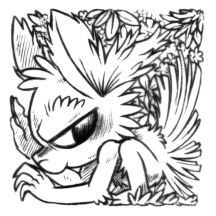
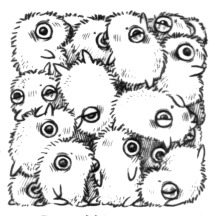
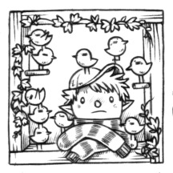
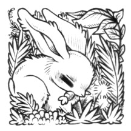
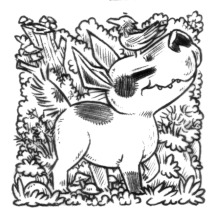
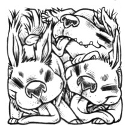
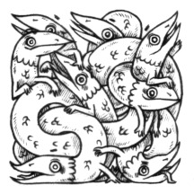
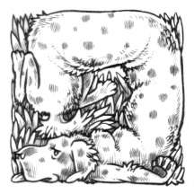
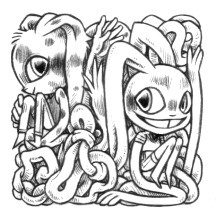
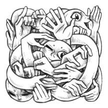
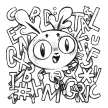
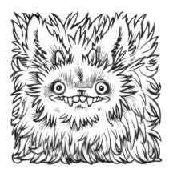
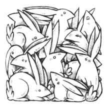
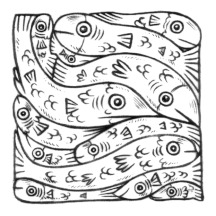
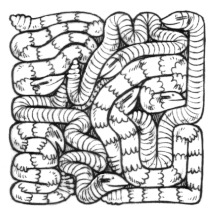
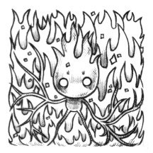
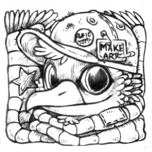
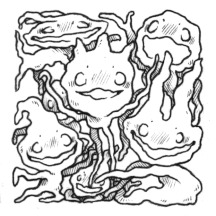